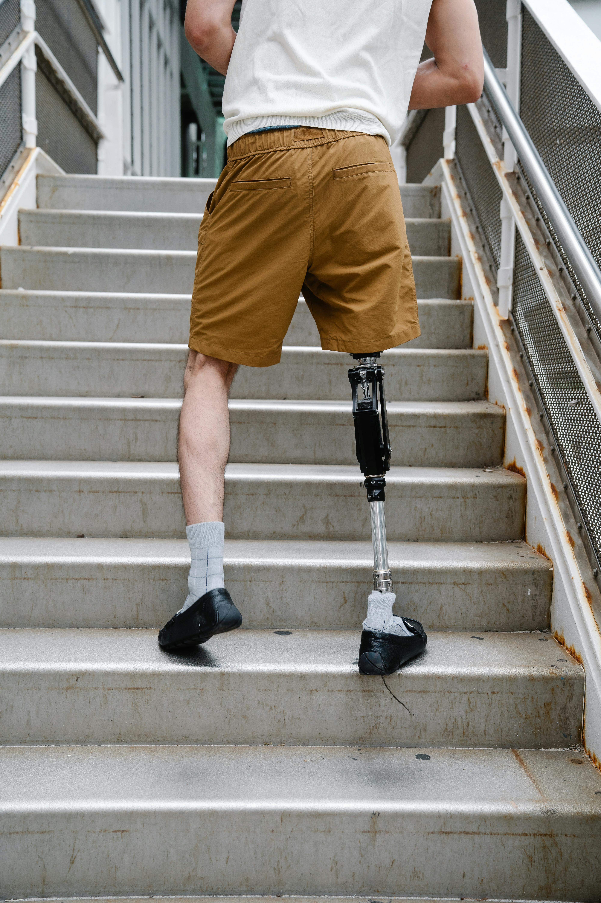
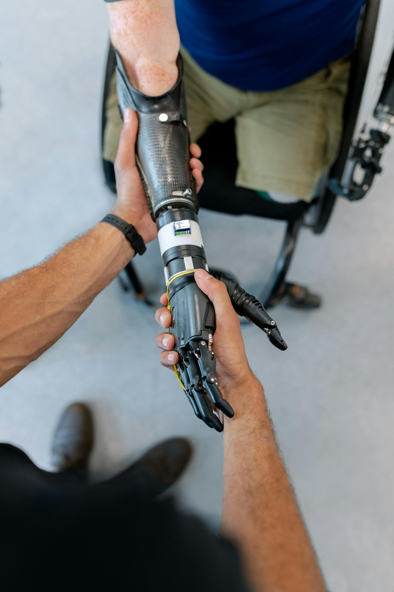

Protez Nedir?
|
Protezler, vücuttaki eksik veya hasar görmüş bir uzvun yerini almak için tasarlanmış yapay cihazlardır. Bu cihazlar, genellikle fiziksel engellilik, yaralanma veya doğuştan gelen anomaliler gibi durumlarda kullanılır.
Detayları Öğrenin
Videoyu İzleyin



Protezler: Yaşamı Kolaylaştıran Yenilikçi Çözümler
Günümüzde, protezler yaşam kalitesini artıran ve yaşamı kolaylaştıran önemli medikal cihazlardır. Birçok insan için, bir uzvunu kaybetmek ciddi fiziksel ve duygusal zorluklara neden olabilir. Ancak, modern protez teknolojileri sayesinde, bu zorluklar azaltılabilir ve hatta bazı durumlarda ortadan kaldırılabilir.
Protez Nedir ve Neden Kullanılır?
Protez, bir uzvun kaybı sonucu eksik olan vücut parçasını yerine koymak veya desteklemek için kullanılan yapay bir cihazdır. Uzuv kaybı genellikle doğal bir afet, kazalar, ameliyatlar veya doğuştan olabilir. Protezler, kaybedilen uzvun işlevselliğini geri kazanmaya veya en azından günlük yaşamda işlevsel bir hareketlilik sağlamaya yardımcı olabilir.
Protez Çeşitleri ve Kullanım Alanları
Protezler, birçok farklı türde gelir ve kullanım alanlarına göre çeşitlilik gösterebilir. İşte bazı yaygın protez türleri:
Ekstremite Protezleri: Kol, bacak, el veya ayak gibi ekstremitelerin kaybı durumunda kullanılır. Bu protezler, kullanıcının hareket etmesine ve günlük aktivitelerini sürdürmesine yardımcı olur.